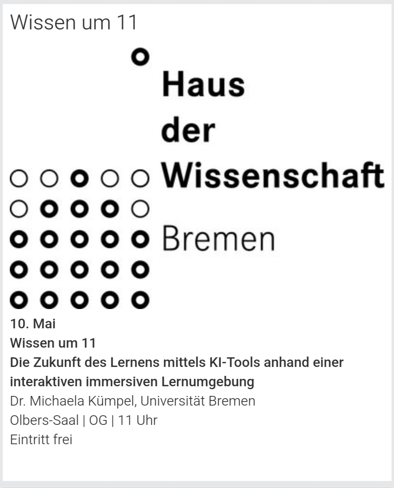

News
- Our journal article "Everything Robots Need to Know About Cooking Actions: Creating Actionable Knowledge Graphs to Support Robotic Meal Preparation" got accepted at Frontiers in AI and Robotics for publication!
- I am happy to be a new member of the editorial board of the KI Journal.
- Just heard that my students' paper "Comparative Analysis of Entity Matching Approaches for Product Taxonomy Integration" is in a short list of candidates to win the IC3K 2025 Best Paper Award!
- Excited to be hosting a little Hackathon August 11-13 for creating an Actionable Knowledge Graph for plant irrigation, together with Zhiyin Tan and Jennifer D'Souza from Leibniz University of Hannover!
- Im happy to share that I have been asked to give a talk at the 1st edition of the Joint Workshop on Ontologies, Semantic Maps and Autonomous Robotics Standardization, a workshop at the RO-MAN conference, to be held on August 29 in Eindhoven, Netherlands.
- I am proud to announce that my student's paper "Comparative Analysis of Entity Matching Approaches for Product Taxonomy Integration" got accepted at KEOD (17th International Conference on Knowledge Engineering and Ontology Development), and Im looking forward to present it in Marbeilla, Spain in October.
- Very short notice but if you have time, feel free to join my talk at Haus der Wissenschaft on May 10 at 11, about "Die Zukunft des Lernens mittels KI-Tools anhand einer interaktiven immersiven Lernumgebung". More info here on their website.
- "Do more of what makes you happy": I will again be jurywoman of the Explore Science competition funded by the Klaus Tschira Stiftung, which will be on September 11 and 12 in Bremen this year. Find out more about the competetion on this website.
- We are hosting the second edition of the workshop on Actionable Knowledge Representation and Reasoning for Robots (AKR^3) at ISWC in Japan this year. More info can be found here.
- Our workshop proposal (a collaboration with Alessandra Sciutti and Britta Wrede) for the first workshop on interactive task learning for human robot co-construction (ITL4HRI) got accepted at ROMAN. More info can be found here.
- I’m excited to share that I’ve been invited to participate in the H2Media project, working alongside the Resilient Energy Systems Group at the University of Bremen and the University of Münster. I will be creating a knowledge graph about energy related buzzwords and agents in newspaper articles, in order to detect trends. I’m really looking forward to contributing to this collaboration and diving deeper into the innovative work surrounding hydrogen technologies and energy systems. Grateful for this opportunity — can’t wait to get started!
- Our workshop proposal for the next integrated food ontology IFOW workshop got accepted at FOIS
- Both my paper "Enhancing Cognitive Robotics with Actionable Knowledge Graphs: A Framework for Context-Aware Reasoning" and our paper "Virtual Research Building: Accelerating Collaborative Robotics Research and Innovation" got accepted at the 1st German Robotics Conference (GRC), and we will present them in Nürnberg on March 13-15
- Our paper "Semantic Digital Twins for Omni-Channel Localisation" got accepted at 11th IFAC conference on Manufacturing Modelling, Management and Control - IFAC MIM 2025, and we will present it at the special session "Digital Twins", 30.6.-3.7.25 in Trondheim, Norway
2024
- My individual project called "Actionable Knowledge Representation for Robots" (AKR4R) got accepted for funding by the Central Research Development Fund of the University of Bremen. The project is expected to start on March 1st, 2025 and end in February 29, 2027.
- From September to December 2024, I will be at the Vrije Universiteit Amsterdam for a research stay. You can reach me via E-Mail of course
- I am co-Organiser of the European Workshop on Knowledge Representation and Reasoning for Cognitive Robots (EUKRR4R), which will be held on November 14-15, 2024 at the University of Bremen
- Both of our contributions, "Task Learning Using Actionable Knowledge Graphs" and "AICOR learning hub", got accepted at ICRA@40. We will present them in Rotterdam, Netherlands September 23 - 26
- I am part of the program committee of this year's EKAW conference (24th International Conference on Knowledge Engineering and Knowledge Management), which will be held from 26. - 28.11.24 in Amsterdam, Netherlands
- I will be jurywoman at this years "Explore Science" Event, an event designed to spark interest in children in mathematics and informatics. It takes place from 5. -7.9.24 in Bremen
- Our Tutorial proposal at EKAW 2024 for a Hands-On Tutorial to showcase how to extract relevant knowledge for robot action execution and how to use this knowledge to parameterise general robot action plans has been accepted!
- Our paper “Between Input and Output: The Importance of Modelling Transients in Meal Preparation Tasks” got accepted at the IFOW 2024 Integrated Food Ontology Workshop, Enschede, Netherlands, which is held at the Formal Ontologies in Information Systems Conference FOIS 2024, and I will present it on July 15 at IFOW in Enschede, Netherlands
- Our paper “Towards a Knowledge Engineering Methodology for Flexible Robot Manipulation in Everyday Tasks” got accepted at the Workshop on Actionable Knowledge Representation and Reasoning for Robots (AKR^3) at the Extended Semantic Web Conference ESWC 2024, and we will present it on May 27 at ESWC in Crete, Greece
- Our Tutorial proposal at HHAI 2024 for a Hands-On Tutorial to showcase how to extract relevant knowledge for robot action execution and how to use this knowledge to parameterise general robot action plans has been accepted!
- Our workshop proposal for the “Workshop on Actionable Knowledge Representation and Reasoning for Robots (AKR^3)” at the Extended Semantic Web Conference 2024 got accepted! The Workshop information is accessible here: AKR^3 workshop page
- Our cutting repository is online and ready to be used! Its openly available on github where you get access to all sources from executing actions on the real robot, querying the knowledge graph to simulation or simply trying out the querying on the fly, on the website. You can find it here: Food cutting on GitHub
2023
- Both papers “Trust, But Verify: Towards Trustworthiness in Digital Assistants Based on Verifiable Claims in Knowledge Graphs” (where we propose a setup for users to retrieve a trustworthiness recommendation for visualised AR content) and “Evaluation of Autonomous Shopping Assistants Using Semantic Digital Twin Stores” (where we evaluated the Shopping Assistant system proposed in the AAMAS paper) got accepted to the AIC workshop and we will present them on September 15 in Bremen
- My ProductKG paper got accepted to the FOIS demonstration track. I will present the paper at FOIS virtually on September 18. In this paper I present my product knowledge graph and its many applications.
- We are currently working on a KnowRob package as plugin for knowledge graphs (GitHub page for KnowRob_KG)
- My colleague Daniel Bessler was so nice to present our AAMAS paper this year “Robotic Shopping Assistance for Everyone: Dynamic Query Generation on a Semantic Digital Twin as a Basis for Autonomous Shopping Assistance”. In the paper we present an architecture and a query template that can be used by different agents (such as robot or smartphone)for shopping assistance
- Due to an accident and breaking my wrist I have to take a break from work (starting May 2023, probably taking about 12 weeks)
2022
- My ProductKG web page and application page are online: ProductKG, ProductKG Application page
- We are starting a school project in close collaboration with the Gymnasium am Markt Achim. The school kids in grade 5 will read a book about our work in school, visit our labs to then present what they learned about robots. We are hoping to spark interest in research and in AI but also like to know what children views on AI topics are.
- I joined the Intel4CoRo project. Looking forward to writing a great open textbook and creating lots of interactive content!
2021
- Our paper “The Downgrading Axioms Challenge for Qualitative Composition of Food Ingredients” got accepted at the Semantic Reasoning Evaluation Challenge
2020
- Our paper “Cutting Events: Towards Autonomous Plan Adaption by Robotic Agents through Image-Schematic Event Segmentation” got accepted to K-CAP where Maria and I will present it virtually. In this paper we showed how robots can adapt their plans autonomously in case of different failures (e.g. like the knife being dull)
- Our book chapter “Semantic Digital Twins for Retail Logistics” got published. Here, we present our view of how digitisation in retail can easily be integrated in companies when using semantic Digital Twins of retail stores.
- The Knowledge4Retail website is available online at K4R website
2019
- Our paper “Using Linked Data to Help Robots Understand Product-related Actions” got accepted to the Robontics workshop. The paper presents the idea to use Linked Data as a knowledge source for robotic action execution.
- I joined the Knowledge4Retail project. I am looking forward to creating semantic Digital Twins of retail environments and showcasing their benefits in pilot applications.